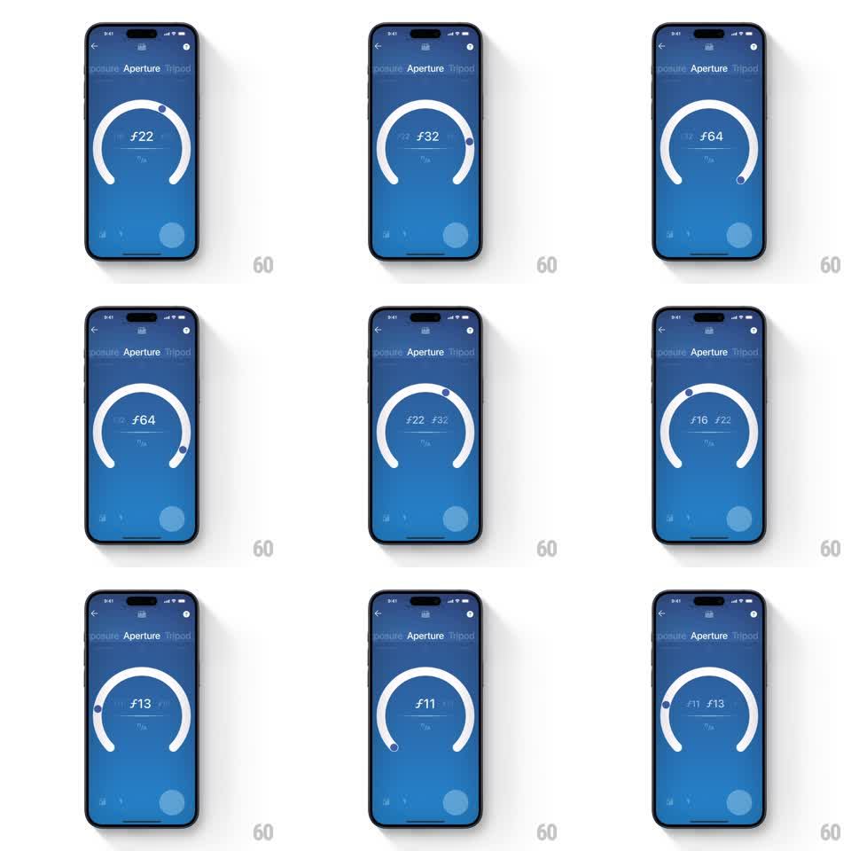

Media
Frame-by-frame

Rebuild this interaction 1:1: Polaroid's aperture dial - a semi-circular arc slider where f-stop values ride the arc as you swipe, snapping to each stop with fading edge values.

Rebuild this interaction 1:1: Polaroid's aperture dial - a semi-circular arc slider where f-stop values ride the arc as you swipe, snapping to each stop with fading edge values.
## Integration
Integration: stack-agnostic spec - springs given as stiffness/damping, timed motions as duration + curve; map every value to your framework and animation library of choice.
## Scene
Deep blue camera screen. Top: a segmented mode strip ("Exposure / Aperture / Tripod", Aperture active). Center: a large white semi-circular arc (about 240deg of a circle) with a small handle dot riding it; the current f-stop ("f/22") in large white type at the arc's center, neighboring values (f/32, f/64...) arranged along the arc fading with distance. A faint shutter circle sits bottom-right.
## Motion spec
Pattern: swipe-rotated arc value dial with snap and distance fade.
- Dragging anywhere horizontally (or along the arc) rotates the value wheel 1:1: values travel along the arc, the handle dot riding to the active value's position.
- Each value's opacity and scale fall off with angular distance from center (100% at center, ~25% and 0.7x at the arc ends); the center value also gets full weight, neighbors lighten.
- Release: the wheel snaps the nearest f-stop to center (spring ~280/20, one soft overshoot) with a tick haptic per stop passed while dragging.
- The arc itself is static - only the values and handle move; a hairline tick on the arc marks each stop.
- Mode strip: tapping Exposure or Tripod slides the active underline (spring ~300/22) and crossfades the dial's value set (200ms).
## Calibration
- Values stay upright as they travel the arc (no tangential rotation) - readability first.
- Snap is decisive: max 300ms to settle from a fast fling, never drifting between stops.
## Reduced motion
Values jump to the selected stop with a 150ms fade; no travel along the arc.
## Don't miss
- The f-stop format ("f/22", lowercase f, slash) and the exact stop sequence.
- The blue is a specific deep camera blue - the white arc must pop off it cleanly.